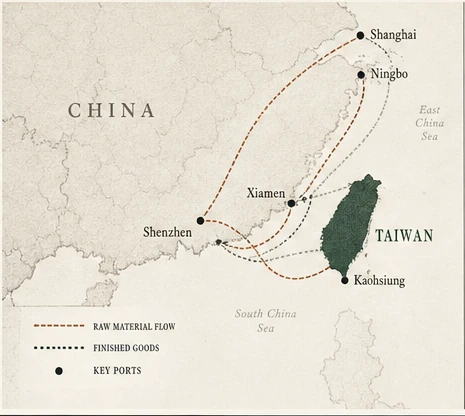

Lead story
Reading the regional shifts that move real-world quotes.
From raw-material corridors to policy turns and port conditions—what actually changes your landed cost.
Read the full Asia view →Production, export, freight and policy signals translated for Western OEM buyers.
From raw-material corridors to policy turns and port conditions—what actually changes your landed cost.
Read the full Asia view →
Three sourced signals only. Read the action first, then open the evidence.
Inputs are shown only when this edition carries a usable series. Red means rising buyer-cost pressure.
English-language local media only, filtered for traditional hardware, metal-processing, plastics, resin, factory export and industrial supply-chain coverage.
Local English reporting on Taiwan-origin metal, plastics, machinery, factory and export conditions.
Local English reporting on China-origin metals, plastics, factories, exports and traditional manufacturing pressure.
Open the local publisher; Birdland's buyer interpretation stays separate.
This desk excludes broad politics, defence, consumer-market and general macro headlines. Official statistics remain available elsewhere in the site as evidence, but this panel is intentionally local-media led.
A lane is never described as congested unless a connected source supplies that fact.
Use the original authority link for product-specific legal, customs or broker advice.
Original publisher links are retained. Birdland interpretation is a supply-planning lens, not a replacement for the source.
Choose public topics to highlight in this browser. No account, email, name or project data is collected.
Subscription refresh timing depends on your calendar application. These are public reminders, never customer milestones.
Use a feed for ongoing public reminders, or download one event for Outlook, Apple Calendar or Google Calendar.
The workflow timestamp means an edition was produced; it never makes a delayed source current.
Birdland only uses public sourcing context here. Customer names, quotations, drawings, specifications, order data and price agreements never belong in this edition.